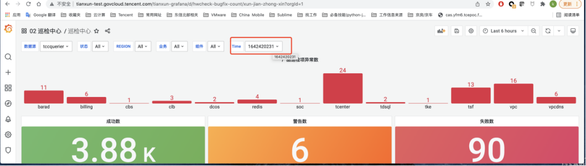
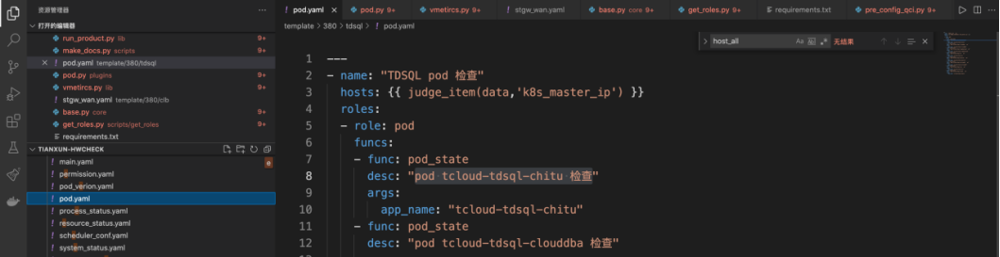
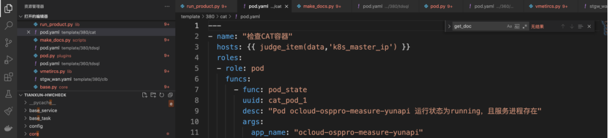

天巡系列文章-巡检
core: 核心代码入口，执行总入口
lib: 需要的lib库，比如redis、mysql、cos等的python对接client，对接vm的代码封装。
plugins: 执行巡检的各个插件，每个插件都需要包含执行的脚本命令，对执行结果的分析(成功 or 失败)。每个plugin还有一个runner，runner是连接对应主机执行任务的，当前支持ssh、local。
scripts：封装的各种命令行工具，比如渲染tasks中的hosts命令，打通巡检主机秘钥的命令等等
tasks: 巡检的任务库，基于yaml文件编写。每个yaml中定义需要调用的plugin以及相应参数
最后的巡检结果，会写入到VM（VictoriaMetrics时序数据库）中，该时序数据库支持prometheus api规范，可以通过grafana进行巡检大盘的绘制
1. 动态⾃动加载 plugins 下插件
plugin都会继承HealthCheck这个基类，所有plugin都放在plugins这个目录下面，会通过获取该目录下面的所有类，来拿到所有的巡检插件。
2. 巡检插件与巡检任务分离，提高可扩展性
3. 灵活的主机项、⾃定义监控项
4. 开箱即⽤
5. 基于SSH or 本地命令
项目代码地址https://git.woa.com/tianxun/tianxun-hwcheck
项目主要分为三个版本，对应分支如下：
1. master分支：天巡独立版开发分支，该项目的template目录下面的是任务yaml模板形式的存在，是给TCE用的，在tasks目录下面的，是独立产品的任务yaml文件。
2. tce、release/tce3.8.0、release/tec3.9.0分支：该分支为tce运维平台服务，tce运维平台在执行巡检的时候，会在后端执行机用docker启动一个hwcheck的容器，在容器跑对应的巡检任务，并把巡检结果上报给tce运维平台。该分支针对tce运维平台做了很多适配，比如结果的上报、巡检主机通过tce cmdb进行渲染等。
因为代码存在多个分支的不同版本，目录结构中的部分文件会在不同分支存在
├── CHANGELOG.md # 更新记录
├── Dockerfile # 构建x86镜像
├── Dockerfile.arm # 构建arm镜像
├── Makefile # 打包文件
├── README.MD # 项目Readme
├── base_service/ # 基础服务巡检项，ntp等
├── base_task/ # 基础系统层巡检项， cpu, mem, disk等
├── config.yaml # 项目配置文件
├── core/ # 框架核心代码
├── customer_map.json # 客户信息文件
├── desc.env # 对接TCE qci 的文件
├── docker-compose.yml
├── docker-entrypoint.sh # 镜像入口脚本
├── docs/ # 文档目录
├── lib/ # 封装库
├── plugins/ # 插件目录，插件中定义的方法用于配置巡检项
├── requirements.txt # 依赖python库清单
├── run_script.py # 执行巡检相关其他命令，如：add-key打通服务器密钥
├── scripts/ # 命令脚本目录
├── setup.py
├── start.sh # 巡检部署启动脚本
├── template # 用于存储TCE tasks的模板yaml文件，通过和业务树对接进行渲染，得到最终的tasks目录。
├── tasks # 巡检项配置目录（独立产品使用） ，每个目录是一个独立产品
│ ├── 333
│ ├── 342
│ ├── 350
│ ├── 360
│ ├── 380
│ ├── cmq
│ ├── dial
│ ├── firewall
│ ├── rio
│ ├── router
│ ├── switch
│ ├── tbds
│ ├── tdsql
│ ├── tmf
│ ├── tsf_stand_alone
│ ├── tstack
│ └── weapps
├── tce_build.sh # 对接tce巡检平台使用，qci的构建脚本
├── tianxun.py # 巡检执行入口脚本
└── version.py # 巡检版本号文件
tasks巡检项目录结构
tasks/360/clb
├── main.yaml
├── pod.yaml
├── stgw_lan.yaml
├── stgw_wan.yaml
├── tgw_eip_dpdk.yaml
├── tgw_lan_dpdk.yaml
└── tgw_wan_dpdk.yaml
# 巡检项以产品为单位，每个产品目录下必须有个main.yaml文件，这是巡检项的入口，内容如下
---
name: "CLB 产品巡检" # 该产品巡检名
tasks:
- include: pod.yaml # 通过include的方式将巡检项包含进来
- include: tgw_eip_dpdk.yaml
- include: tgw_lan_dpdk.yaml
- include: tgw_wan_dpdk.yaml
- include: stgw_lan.yaml
- include: stgw_wan.yaml
...
具体项的配置说明
---
- name: "CLB 容器相关进程检查"
# k8s管控端ip
hosts: ['user:pass@host:port'] # 具体巡检的hosts列表，user默认是root，port默认是22端口
roles:
- role: pod
funcs:
- func: pod_state
uuid: clb_pod_1 # 每个巡检项的唯一标识符，命令格式 产品_组件_编号
desc: "检查 TGW Master 机器相关进程运行正常"
args:
app_name: "ocloud-tgw-master-l4"
cmd_list:
- cmd: "ps -fu `whoami` | grep tgw_master | grep -v grep | wc -l"
type: "kubectl"
desc: "判断显示进程有3个，分别是tgw_master_ccs、tgw_master_scc、tgw_master_mcp"
expect_mode: 1
expect_value: 3
expect_equation: "ge"
...
role：对应的是plugins目录中py文件名，这里对应到的就是plugins/pod.py文件。
uuid：每个巡检项的唯一ID，命名格式：产品_组件_编号。进行单个巡检测试的时候，可以通过指定-u {uuid}来进行单一巡检任务的执行。
func：对应插件中的巡检函数。
desc：当前巡检项的描述（描述内容应该清晰表明巡检项）。
args对应巡检函数中的参数.
# plugins/pod.py
import json
import copy
from core.base import HealthCheck
from core.base import check_task
class PodCheck(HealthCheck):
role = "pod" # 定义的role名，用于tasks中配置
# 只有使用了check_task装饰器的函数才会被作为巡检方法
@check_task(task_name="检查 pod 容器", lab="container")
def pod_state(self, app_name, namespace="tce", cmd_list=None, pod_limit=None):
"""
pod_state 容器内巡检方法
:param app_name: 容器 app_name
:param namespace: k8s namespace
:param cmd_list: 容器中执行的命令
:param pod_limit: 同 app_name pod 数量限制, 默认巡检所有
"""
...
目前项目中已经有了很丰富的插件，如果当前插件不能满足需求，可自行开发对应插件，在plugins目录下创建一个py文件，以下是一个插件示例
from core.base import HealthCheck, check_task
class Example(HealthCheck):
role = 'example'
@check_task(task_name="任务1", lab="process")
def example1(self, param1):
"""
<描述巡检步骤>
:param param1: xxxxx
"""
# 检查任务最后需要返回以下：
# SUCCESS_STATUS_CODE, 成功
# FAILED_STATUS_CODE, 失败
# WARN_STATUS_CODE, 警告
return self.SUCCESS_STATUS_CODE, "<message>"
@check_task(task_name="任务2", lab="process")
def example2(self):
return self.FAILED_STATUS_CODE, "<message>"
@check_task(task_name="任务3", lab="process")
def example3(self):
return self.WARN_STATUS_CODE, "<message>"
插件类继承
HealthCheck
角色，通常和文件名字一致，值用于tasks的yaml中配置
role
巡检方法使用check_task装饰器,task_name是巡检项的名字，lab是巡检项的一个分类
@check_task（task_name="xxx", lab="xxx"）
巡检项的分类如下：
类型 | lab |
CPU类包括load | cpu |
内存类 | mem |
磁盘空间&IO类 | disk |
进程类 | process |
端口类 | port |
容器类 | container |
所有数据库 | db |
配置文件 | config |
消息队列 | mq |
支撑组件 | kafka |
注册中心 | zk |
API | api |
time | time |
ping | ping |
shell | shell |
水位 | water_level |
可靠性 | reliability |
性能 | performance |
每个巡检方法必须要有文档说明，每个巡检项执行完毕后，在vm写数据的时候，会添加一个label，key是doc，value就是注释。
def example1(self, param1):
"""
<描述巡检步骤>
:param param1: xxxxx
"""
巡检结果最终会统一写入到vm中，在vm中的指标名是一样的，为hwcheck_data。通过label来区分不同的产品、组件执行的运行结果。涉及到的label如下：
l business：业务产品名，也就是tasks下面的目录名，比如vpc、cfs等
l check_type：tasks的yaml文件中name字段
l component：plugin中的role值
l doc：每个巡检任务的help文档。通过lib/run_product.py中的get_doc()函数生成
l expend_time：巡检执行时间
l exported_instance：巡检执行主机
l func：巡检plugin中的func名字
l jid：局点ID
l lab：巡检plugin中，每个函数的装饰器@check_tasks(lab="xxx")，这里的lab参数
l msg：巡检执行输出
l
l name： tasks yaml中的desc。如果没有配置，默认是每个巡检函数装饰器@check_tasks(task_name="xxx")，这里的task_name参数
l region_name：多region环境，region的名字
l status_type："SUCCESS_STATUS_CODE"或者"FAILED_STATUS_CODE"或者"WARN_STATUS_CODE"
l taskid：执行巡检任务的timestamp，每个巡检周期，会把所有的巡检任务打上同一个taskid，也就是巡检开始的timestamp。
指标的Value值为0（成功）、1（失败）或者2（警告）
由于hwcheck_data的label过多，在前端UI进行读取的时候，数据量过大会有问题，所以后端有个recording rule的配置，生成一个新的指标hwcount，该指标会收敛label的数量，但是结果是和hwcheck_data是完全一样的。
当前，plugins中含有一个通用的执行shell的plugin。可以用该plugin适配绝大部分的shell相关巡检，只需要配置tasks yaml文件就可以。该plugin位于plugins/system/system.py中的system_exec_command函数。对接过程，只需编写tasks目录下面的yaml文件即可，编写规则如下：
- name: "Apigw 进程状态检测"
hosts: ['127.0.0.1']
roles:
- role: system # 固定的，写system
- func: system_exec_command # 固定的写system_exec_command
uuid: apigw_process_3 # 根据产品，组件生成uuid
desc: "apigw nginx worker 进程运行正常" # 巡检描述
args:
cmd_list: # cmd列表
- cmd: "ps -ef | grep 'worker process' | grep -v grep | wc -l" # 执行的shell命令
desc: "apigw nginx worker 进程运行正常" # 命令描述
expect_equation: "gt" # 校验方法 "eq": 等于, "le": 小于等于, "ge": 大于等于, "ne": 不等于, "lt": 小于, "gt": 大于
expect_mode: 1 # 校验模式，如果是0: 判断cmd执行是否成功 $?返回0。如果是 1: 判断返回数据(int)与期望值的关系。如果是2：判断返回字符串与期望值关系。如果是2的话，expect_equation不需要配置re（正则匹配）或者不做配置（完全匹配）。
expect_value: 1 # 期待的输出
该插件，会把本地shell脚本scp到目标机器执行，然后对输出结果与预期值作比较，推断巡检的成功与否。该插件位于plugins/user_sh.py中，函数为execute_sh。配置yaml举例如下：
- name: "检查Elasticsearch集群状态"
# 配置es集群中的一个节点IP
hosts: ["xxxx"]
roles:
- role: user_sh # 固定值
funcs:
- func: execute_sh # 固定值
uuid: user_es_1 # 根据产品，组件生成uuid
args:
# 脚本目录scripts/user 文件夹
sh_name: "example.sh" # 本地存储目录scripts/user/example.sh，远端存储目录/tmp/example.sh
expect_value: "10.211.55.4" # 期望的输出结果
expect_model: "eq" # 校验方法 "eq": 等于, "le": 小于等于, "ge": 大于等于, "ne": 不等于, "lt": 小于, "gt": 大于
is_delete: true # 执行完程序是否在远端删除，默认为true
解决⽅案：删除 tasks ⽬录下的异常⽂件 问题原因：tasks ⽬录是巡检⼯具的巡检项配置⽬录，不能
在该⽂件夹下有任何其他⽂件及⽂件夹存在
在执⾏命令打通 key 时报错提示 ‘NoneType’object has no attribute‘get’如下：
这个问题主要是产品⾥⾯ main.yaml ⽆法读取导致数据获取失败导致，⽐如被注释掉了，找到对应的
产品 main.yaml ⽂件去掉注释即可。
如下，执⾏巡检时，clb 巡检过程报错，巡检中断。
这是产品巡检包中 yaml ⽂件格式问题。
排查步骤：
a. ⼿动 ssh 是否能连上
b. 通过打通密钥⽅式连接服务器的，需要重新跑⼀次打通密钥脚本
c. 该服务器密码跟其他密码不⼀致，在对应的 yaml ⽂件中的 hosts 字段中配置，配置格式：
user:pass@host:port
d.如果该服务器密码是存⼊密码库中的，则需要配置密码库API对接密钥，详情查看：密码库获
取密码⽅式
e. 手动打通密钥命令：ssh-copy-id root@ip
运⾏时出现如下错误：
该错误表示 yaml 的格式有问题，如上，这⾥表明 tasks/waf/pod.yaml 第 6、21 ⾏中出现了格式错
误， 找到对应位置，修改格式即可，修改完后将改动项告知巡检开发组接⼝⼈：p_xuming（明旭
）
其他错误根据具体情况修改
运⾏时出现如下错误：
该错误表示 tasks ⽬录下 nips ⾥⾯没有 pod.yaml, 我们巡检时却在执⾏巡检，找到 nips ⾥⾯的
main.yaml 把⾥⾯对应的 "- include: pod.yaml"注释掉 修改完后将改动项告知巡检开发组接⼝⼈：
p_xuming（明旭）
执行命令为：python tianxun.py -p all -t 10
报错截图：
报错原因：命令使用错误，请使用以下命令手动巡检：
python tianxun.py -P tasks -p all -t 10
报错截图：
报错原因：容器版本过久，需要手动执行创建目录命令解决，命令为：
mkdir /app/excel && mkdir /app/jdata
解决方法：ps -ef 然后kill 掉第二个python进程。
巡检⼯具跑完⼀遍只有会输出 Excel 和 Json 两种⽂件格式的巡检结果，Excel ⽤于排查问题 每个巡
检项后⾯都会有巡检的步骤
排查步骤
a. 登录服务器确认实际情况是否不存在
b. 查看是否有类似的容器名，若存在，则修改对应 yaml ⽂件的内容，修改完后将改动项告知巡
检开发组接⼝⼈：p_xuming(明旭)
c. 明确该容器是否为项⽬所需
d. 该容器为项⽬所需，找对应⼈排查问题
e. 提单
由于信息填写不准确导致巡检项失败，直接修改对应 yaml 中的错误 IP 即可，修改完后将改动项告知
巡检开发组接⼝⼈：p_xuming(明旭)
adm 进程不存在，KO 模块不存在
排查步骤：
a. 确认项⽬ CLB 的版本是否为 dpdk 版本
b. 如果是 dpdk 版本，则需要修改 clb/main.yaml 中 # include: tgw_ld_dpdk.yaml 的注释打开，
同时注释 include: tgw_ld.yaml
c. 如果不是 dpdk 版本，找对应⼈排查问题
d. 提单
我们的巡检步骤都是根据产研给的⽂档来写的，会出现不够完善的情况，可直接在 yaml 中对巡检命
令进⾏调整，修改完后将改动项告知巡检开发组接⼝⼈：p_xuming(明旭)
该巡检项是检查tcs中k8s node中的资源信息是否与服务器的真是资源信息一致。巡检逻辑是通过k8s api获取到各个node节点，进而获取到每个node节点的在k8s中的资源信息情况，然后ssh到每个node节点，利用shell命令获取系统的cpu和mem信息，然后与k8s中的资源信息做对比，看是否一致。
上面的错误表明，在ssh目标机器获取资源信息时失败了，原因是天巡通过免密方式登录目的主机，天巡部署的时候仅仅打通了tasks的yaml中的hosts。k8s的node节点信息是通过api拿到的，不在tasks中，所以没有做免密登录，所以ssh执行任务的时候会登录失败，需要做的就是在天巡机器手动执行免密操作，具体命令如下：
# 登录tcs master节点，执行如下命令获取所有node的ip
kubectl get node -o wide
# 针对上面的所有节点，在天巡机器通过如下方式打通秘钥
ssh-copy-id root@{node节点ip}
上面的问题是因为，在hwcheck容器内/app/scripts/get_roles/hosts.yaml里面是配置的tstack控制节点的hostname，天巡机解析不了，需要配置host解析。
修改{天巡安装目录}/components/system-hwcheck/docker-compose.yml，在command下面添加代码
extra_hosts:
- "控制接点hostname:控制节点对应ip"
有些巡检项是远程执行shell脚本的，会将本地shell脚本scp到远端机器，然后执行。该类巡检有时会碰到Channel closed的报错。如下图所示：
这种报错的原因是，目标机器没有启动sftp，无法进行scp操作。
解决方案
# 登录远端机器，修改文件/etc/ssh/sshd_config，解注释/添加下面的代码。
Subsystem sftp /usr/libexec/openssh/sftp-server
# 重启sshd服务
systemctl restart sshd
8. cloudaudit nc command not found
cloudaudit tcloud-tcenter-cam-log-yunapi巡检项，会登录目标机器，执行nc命令。
遇到该问题，登录远端机器，安装nc 软件。
yum install -y nc
该巡检项失败的原因是存储t_alarm_record表的数据库的名字，在每个局点不一样，需要手动修改
解决方案：
根据巡检步骤中的mysql信息，登录对应mysql。搜寻数据库名字dcos-xxx，连接该数据库，查看是否有t_alarm_record这张表
获取到对应数据库名字，修改文件"{天巡安装目录}/system-hwcheck/etc/task/{xxx}/docs/db.yaml"
找到“检查 t_alarm_record 没有30天前的数据”关键字，修改对应的mysql_db为具体值。
tsf cousul.yaml配置文件中关于tsf的安装目录配置错误。需要手动修改适配。将所有涉及到tsf安装目录的巡检项都更改目录。
redis cache proxy巡检项中配置的mysql数据库表的名字和具体环境有关，需要手动适配。
需要根据巡检步骤中的数据库信息，连接到对应数据库，找到以newcc开头的数据库，将名字更新到redis/instance.yaml文件中的所有mysql_db字段
原因是业务树同步过来所有zookeeper的机器，该巡检项从所有主机中选择了一台进行测试，这台机器可能没有相应的zookeeper目录，需要修改hosts为争取host信息。
tke中的norm服务域名，是和环境对应起来的，需要手动适配
修改tke/pod.yaml中的norm_url为实际环境的url地址，norm_url url地址获取方式参考巡检步骤。
巡检如果在执行过程中遇到未处理的异常，会退出执行程序，因为excel是在每个region所有巡检项执行完毕以后才会生成。定位问题如下：
1. 首先查看hwcheck 日志，看是否有报错信息
# 获取hwcheck容器id
docker ps |grep hwcheck
# 查看日志
docker logs --tail 100 {hwcheck容器id}
2. 如果hwcheck没有报错信息，显示正常执行。说明有可能卡在某个巡检项或者在执行某个巡检项退出了。通过如下步骤定位是哪个产品的巡检项有问题
1. 登录grafana查看最新一次的执行taskid

2. 通过如下指标查看哪些产品已经跑完，如果返回无结果，调大一下时间周期。通过business确定哪些产品已经跑完巡检。
3. 对比{天巡安装目录}/components/system-hwcheck/etc/tasks/all/下的产品目录，定位到哪个产品没有跑
4. 登录hwcheck容器，手动执行该产品巡检，定位哪个巡检项有问题
# 获取hwcheck容器
docker ps|grep hwcheck
# 进去hwcheck容器
docker exec -it {hwcheck容器id} bash
# 执行巡检
python tianxun.py -T tasks/{如果是多region，此处为JID} -p {获取到的没有跑的产品名}
手动通过ssh-copy-id打通了秘钥，而且手动从天巡机器ssh目的主机可以免密登录，但是巡检项报错，检查服务器连通性失败。
在报错的时候，登录目标机器，执行"systemctl status sshd"或者journal -u sshd找到天巡客户端机器ssh时的log，发现报错如下：
原因：目标机器的ssh版本为8+，在8+版本，默认PubkeyAcceptedAlgorithms没有开启ssh-rsa这个算法。需要修改sshd_confg配置文件。
修复：
# 1. 登录目标机器
# 2. 修改文件/etc/ssh/sshd_config文件，添加如下代码
HostKeyAlgorithms +ssh-rsa
PubkeyAcceptedAlgorithms +ssh-rsa
# 3. 重启sshd服务
systemctl reload sshd
巡检完成以后，可以在巡检目录下找到当前巡检的excel结果文件，具体目录如下：
{天巡安装目录}/components/system-hwcheck/etc/data/all/excel
举例分析，如下是某个巡检的excel文件截图：
l 主机名：巡检的主机信息
l 检查项：是tasks目录下yaml文件中的name参数
l 检查点：是tasks目录下yaml文件中的desc参数。
l Message: 执行的输出信息
l 执行步骤：执行的具体plugin的某个函数的说明文档。
通过以上信息就可以进行巡检plugin代码的定位。首先通过检查项和检查点定位到具体的yaml任务。对于tree_dev的分支代码，查看template目录，对于其他分支，查看tasks目录。本文以tree_dev分支讲解。比方说对与上图中的第一个case：
检查项：TDSQL pod 检查，检查点：pod tcloud-tdsql-chitu 检查
通过检查点和检查项定位到了pod.yaml中。然后再看这个检查项属于role=pod，func=pod_state。
role是每个plugin类对应的参数，通过和plugin的python文件名一直。
func是具体plugin类的某个函数。
args是函数执行传入的参数。
所以我们就可以定位，plugin执行的代码，就是plugins/pod.py中的pod_state函数，此时可以通过excel中的
查看plugin中的代码，进行相应执行逻辑的代码修改。
当遇到某个巡检项失败的时候，需要登录环境debug，此时想只跑某一个task，可以通过以下方式执行：
1. 获取到该task的uuid，首先可以参考文档5.3获取到巡检的yaml代码，查看巡检项的uuid，如果没有，可以手动添加一个。举例分析：

上述任务的uuid为"cat_pod_1"
2. 获取到uuid以后，登录巡检所在的容器，执行如下命令
其中
l -T是tasks目录，如果是多region环境，也就是tasks目录下面还有一级以jid命名的目录，此时―T需要制定为tasks/{jid}。
l -p是产品名
[root@VM_15_158_centos ~]# docker ps|grep hwcheck
c9fcea8c00d5 csighub.tencentyun.com/tianxun/tianxun-hwcheck:v2.1.0-r290 "/app/docker-entry..." 7 days ago Up 7 days hwcheck-all
[root@VM_15_158_centos ~]# docker exec -it hwcheck-all bash
root@c9fcea8c00d5:/app# python tianxun.py -T tasks -p cat -u cat_pod_1 --debug